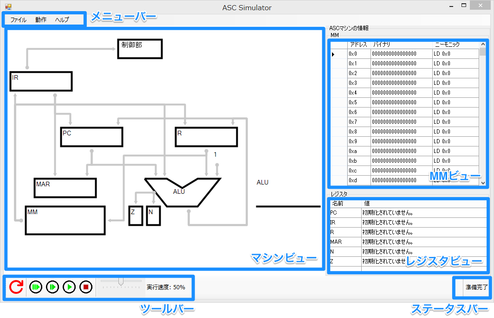
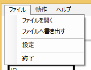
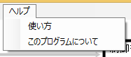
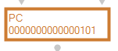
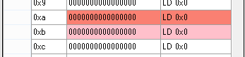

2. 機能の説明にて、各部の詳しい説明をします。

asc-assembler.exeやasc-simulator.exeの出力した.ascoファイルを選択し、メモリに読み込みます。
またこの時、.ascsファイルで設定したORGの値がPCに設定されます。
MMの内容を.ascoファイルへ書き出します。
ここで書き出すファイルは、asc-assembler.exeの書き出すファイルと互換性があります。
マシンビューの設定など、細かな設定をすることができます。
レジスタ、フラグの値を0に設定します。
後述する[初期化ボタン] との違いは、命令サイクルの状態を変更しないことです。
との違いは、命令サイクルの状態を変更しないことです。
メモリの内容を0で初期化します。
ブレークポイントを全て解除します。
マシンビューの表示、MMの表示、レジスタの表示を更新します。 表示に不具合のある場合などに使用してください。
押すと、以下のようなダイアログが表示されます。

表示したいアドレスを入力し、[移動]を押すことで、MMの表示を指定したアドレスまでスクロールすることができます。

このページを表示します。
プログラムのバージョンなどを確認することができます。
ASCマシンの状態を確認することができます。

マシンビューにおいて、値の書き換え、値の参照などが発生した場合、色が変わることがあります。
緑色はその部分において、参照が発生したことを表しています。

オレンジ色は書き換えが発生したことを表しています。

また、色のついた矢印は、値が移動したことを表しています。
画面右の[MM]という表に、ASCマシンのMMの内容が表示されます。

MMビューにはアドレス、バイナリ、ニーモニックの順に値が表示されており、
バイナリ列にはMMの内容の二進数表示が、 ニーモニック列にはMMの内容の逆アセンブルが表示されています。
(ただし、ここで表示されているニーモニックはあくまでもMMの逆アセンブルです。 .ascsファイルで定数とした値も、 シミュレータ上では命令として解釈され表示されることに注意してください。)
MMビューの行が着色されるときがあります。

濃い赤は現在実行している命令の内容を表しており、
薄い赤はPCの指すアドレスの命令の内容を表しています。
バイナリ、ニーモニックの列は、クリックすることで直接書き換えることができます。
値を入力した後、Enterを押すか、他の行をクリックすることでMMへ反映することができます。
書式にエラーがあった場合は、赤いマークが表示されます。
この赤いマークにマウスオーバーすることでエラーの内容を確認することができます。

[MM]のアドレスの左にある列をクリックすることで、ブレークポイントを設定できます。

ブレークポイントとは、デバッグの際などに、指定したアドレスで自動的に実行を停止する機能です。
ブレークポイントが設定されたアドレスは、左側に赤い丸 が表示されます。
が表示されます。
この赤い丸をもう一度クリックすることで、ブレークポイントを解除することができます。
また、メニューバーより[動作]→[ブレークポイントを初期化]機能より、全てのブレークポイントを解除することもできます。→ブレークポイントを初期化
画面右下に表示されている[レジスタ]という表に、レジスタとフラグの値が表示されます。

名前、値の列にそれぞれ、レジスタ名とレジスタの値が表示されています。
値列はクリックすることで編集することができます。
Enterを押すことや、他の行をクリックすることで編集内容をレジスタに反映することができます。
入力にエラーがあった場合は、赤いマークが表示されます。
この赤いマークにマウスオーバーすることでエラーの内容を確認することができます。

画面下部のツールバーには、ASCマシンの動作を操作するボタンなどが配置されています。
ASCマシンのレジスタとフラグの値を0に設定し、命令サイクルの冒頭に戻ります。
メニューバーにある、[レジスタとフラグを初期化]との違いは、 命令サイクルを冒頭に戻す機能が追加されていることです。
プログラムを実行しなおす際などには、基本的にはこちらを使用してください。

ASCマシンを、HLT命令かブレークポイントがあわられるまで実行します。
手動で停止する際は、後述する[ブレーク]ボタン を使用してください。
を使用してください。

ASCマシンを、次の命令まで実行して停止します。
ASCマシンを、次の状態まで実行して停止します。
通常実行時に実行を（強制的に）中断し停止します。

スライダを調節することで、通常実行ボタンを押した際のASCマシンの実行速度を調節できます。
実行速度を遅くすることで、処理の内容を追いやすくなります。
また、処理に時間のかかるプログラムなどは、実行速度を速めることで高速に実行することができます。
このシミュレータは、同封のasc-assembler.exeの出力する、.ascoファイルを読み込むことができます。
以下に、このシミュレータを使ってプログラムを実行する手順を示します。
を押す。を押す。以上の手順で、プログラムを実行することができます。
(2, 3の手順を、ファイルをドラッグ&ドロップすることによって代用することもできます。)
読み込んだプログラムをデバッグするための手順を、以下に示します。
を押す。や
[状態単位ステップラン]ボタンを使い、動作を確認する。を押して、レジスタとフラグを初期化する。バグの改善が確認できるまで、この操作を繰り返してください。
ブレークポイントで停止している間に、RやZ, Nなどの値を変更することも、バグの特定につながります。
MMの変更機能により、シミュレータ上でプログラムを作成することも可能です。
以下に、その手順を示します。
を押し、動作を確認する。ここで書き出した.ascoファイルは、asc-assembler.exeの出力するファイルと互換性があるため、再びシミューレータで読み込むことができます。